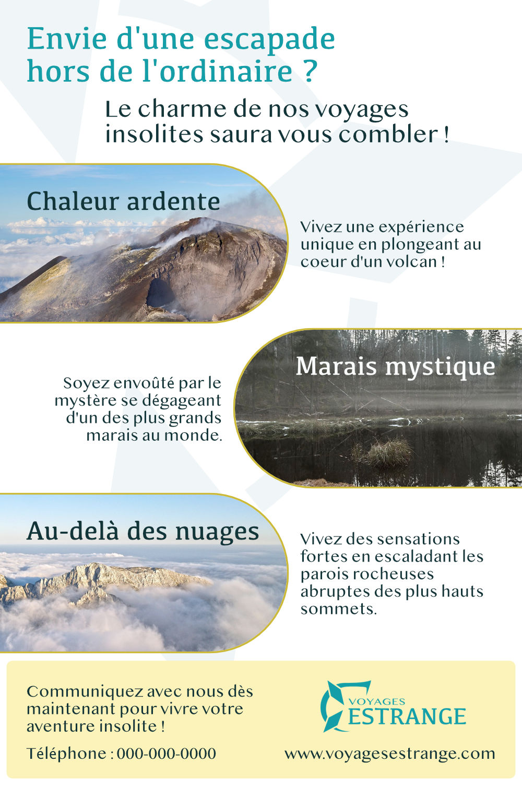

Eynrj, compagnie développant des systèmes de chauffage et de climatisation, désirait une interface pour son nouveau module de chauffage tactile. Le projet a été réalisé à l'aide du logiciel Affinity Designer.
Eynrj est une compagnie fictive. Le logo ainsi que les éléments graphiques ont été conçus et réalisés par J.Cloutier.

Voyages Estrange, agence spécialisée dans la vente de voyages dans des lieux insolites, désirait une affiche publicitaire pour sa succursale, afin de promouvoir trois destinations. Le projet a été réalisé à l'aide du logiciel Affinity Designer. De plus, les photos utilisées pour la production du projet proviennent d'une banque d'images libres de droits.
Voyages Estrange est une compagnie fictive. Le logo ainsi que les éléments graphiques ont été conçus et réalisés par J.Cloutier.
Starship Burger désirait un menu imprimé suivant sa thématique spatiale, afin de le distribuer par la poste ainsi que dans ses restaurants. Le projet a été réalisé à l'aide du logiciel Affinity Designer. De plus, les photos utilisées pour la production du projet proviennent d'une banque d'images libres de droits, dont certaines ont été retouchées à l'aide du logiciel Affinity Photo.
Starship Burger est une compagnie fictive. Le logo ainsi que les éléments graphiques ont été conçus et réalisés par J.Cloutier.

En plus d'un menu imprimé, Starship Burger a ajouté des bornes interactives dans ses restaurants, permettant ainsi aux clients de commander leurs repas en toute autonomie. Le projet a été réalisé à l'aide du logiciel Affinity Designer. De plus, les photos utilisées pour la production du projet proviennent d'une banque d'images libres de droits, dont certaines ont été retouchées à l'aide du logiciel Affinity Photo.
Starship Burger est une compagnie fictive. Le logo ainsi que les éléments graphiques ont été conçus et réalisés par J.Cloutier.